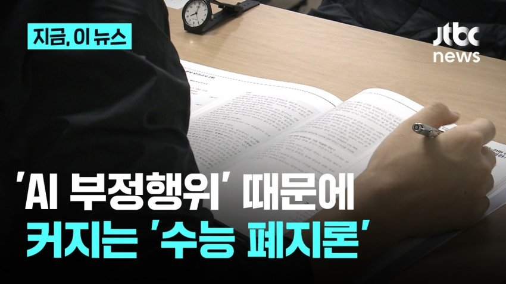
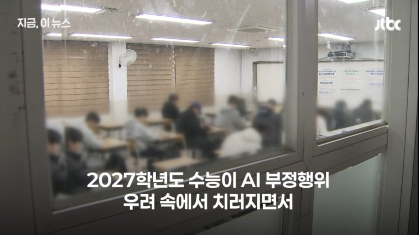
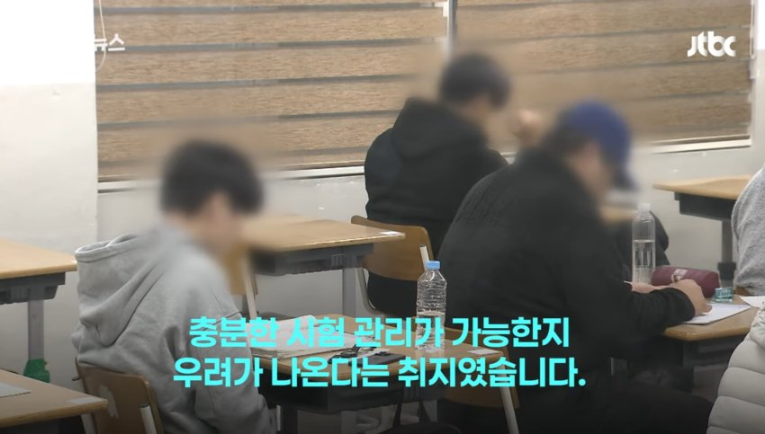
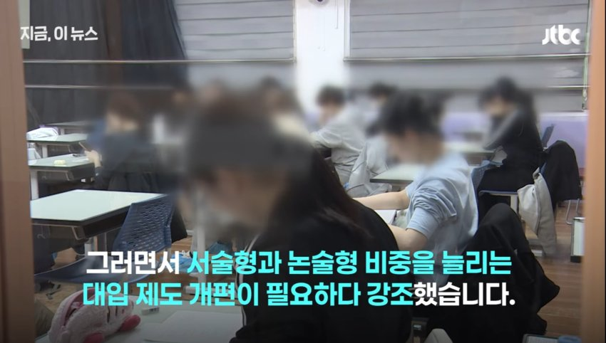
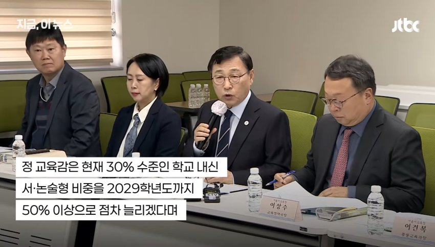
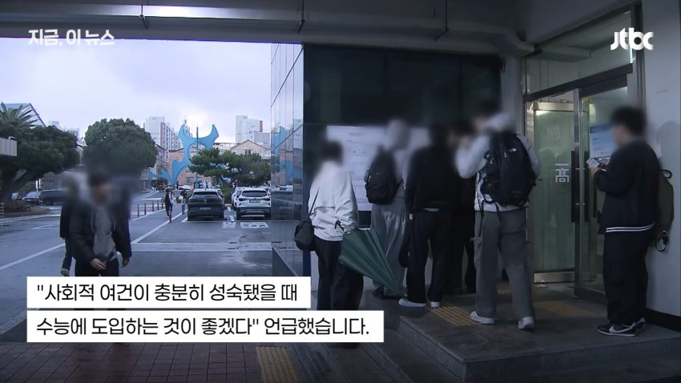
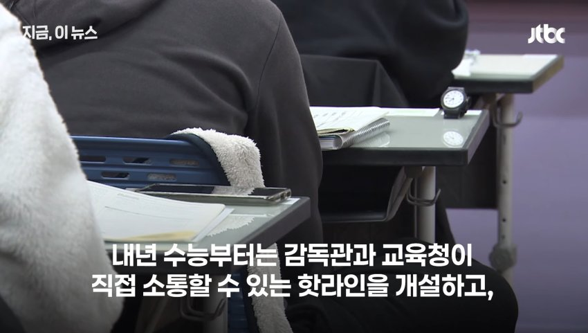
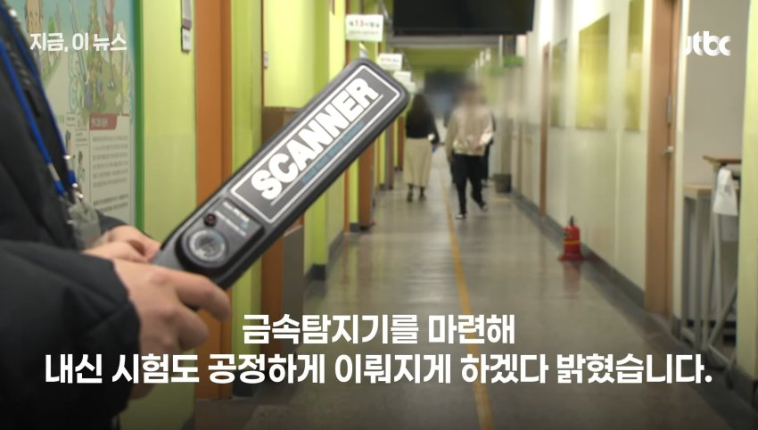
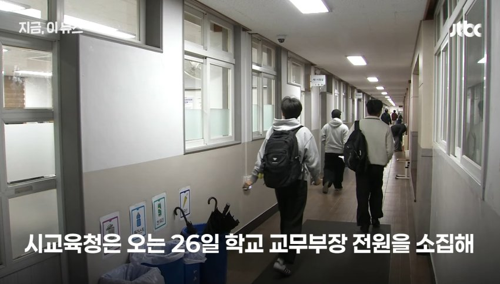
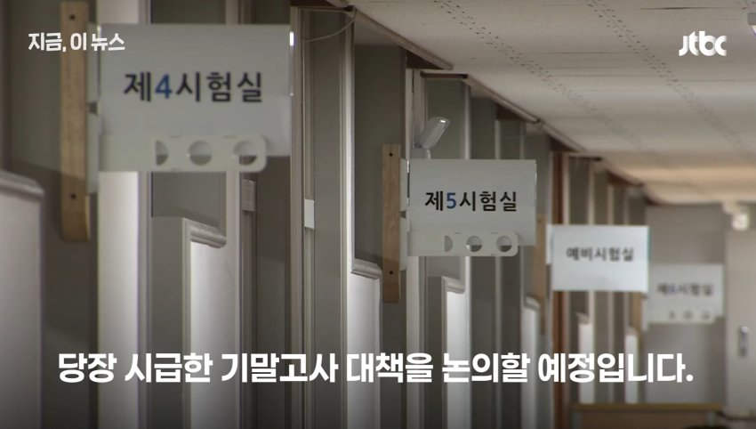
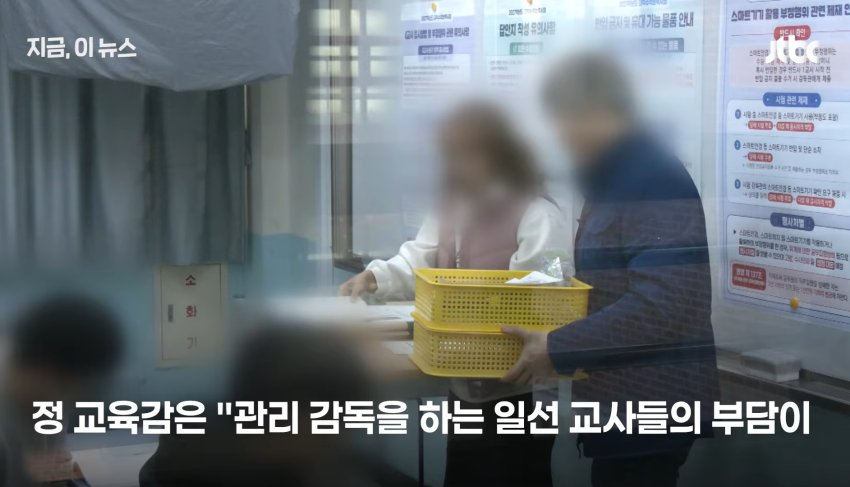
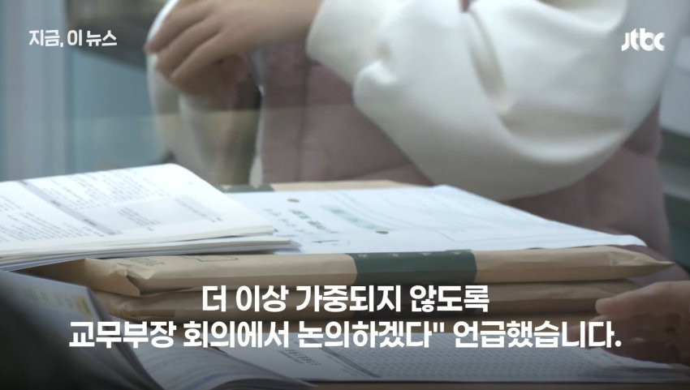
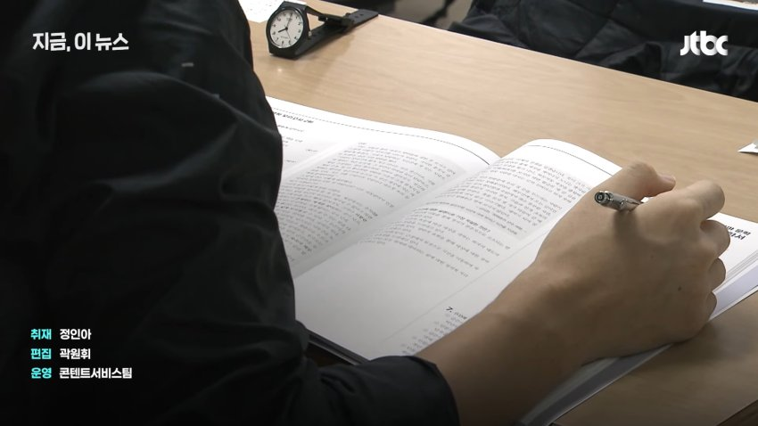
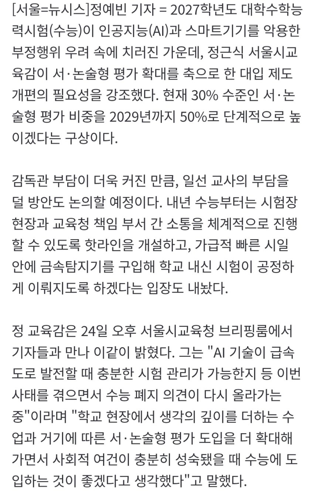
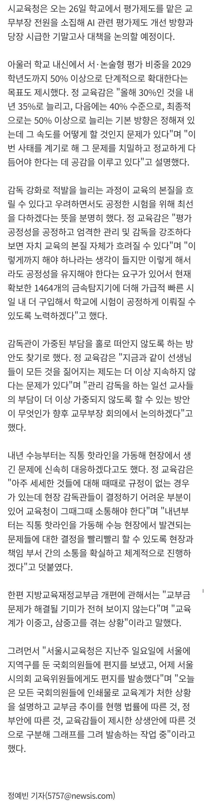
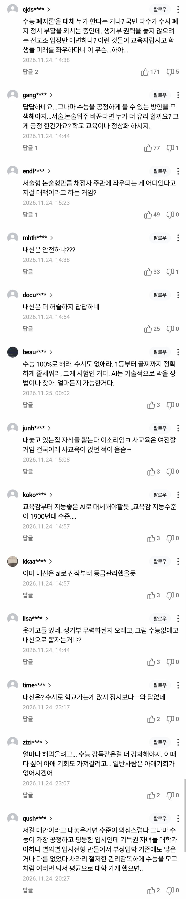
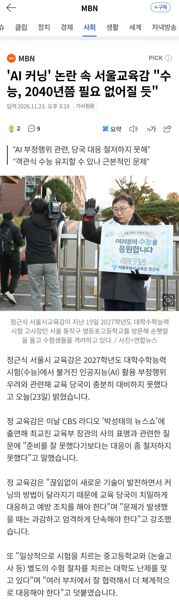
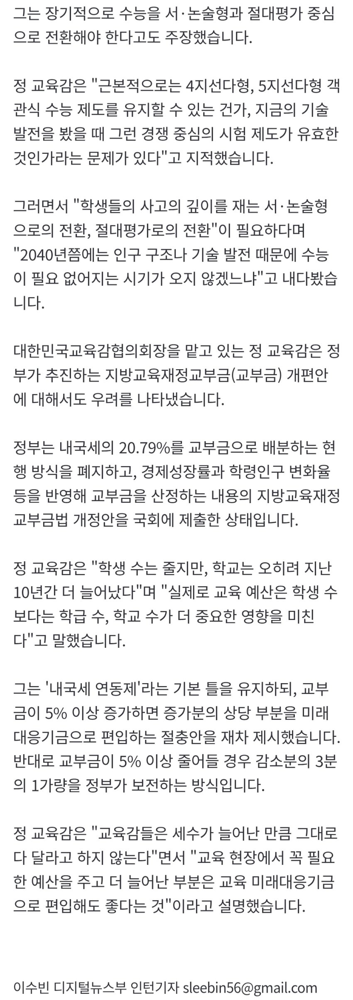
정근식 "'AI커닝'에 '수능 폐지론' 커져…2029년 내신 서·논술형 50%로 확대".gisa
댓글
수집 당시 댓글 234개
ㅇㅇ · 11.26 01:21:59
· ㅇㅇ · 11.26 01:37:52
ㅇㅇ · 11.26 01:22:25
ㅇㅇ · 11.26 01:23:59
· ㅇㅇ · 11.26 01:24:47
ㅇㅇ · 11.26 01:27:17
ㅇㅇ · 11.26 01:27:35
쿠두두룩 · 11.26 01:30:12
ㅇㅇ · 11.26 01:35:47
ㅇㅇ · 11.26 01:47:51
ㅇㅇ · 11.26 01:52:54
ㅇㅇ · 11.26 01:56:01
· ㅇㅇ · 11.26 02:54:19
히이잉 · 11.26 01:57:14
ㅇㅇ · 11.26 02:21:04
· ㅇㅇ · 11.26 02:22:35
· ㅇㅇ · 11.26 02:53:51
ㅇㅇ · 11.26 02:32:48
대재명이 옳았다
ㅇㅇ · 11.26 02:36:47
ㅇㅇ · 11.26 02:54:25
ㅇㅇ · 11.26 03:12:10
· ㅇㅇ · 11.26 03:13:34
ㅇㅇ · 11.26 03:16:55
수시수능개새끼ㅠㅠ · 11.26 03:26:24
ㅇㅇ · 11.26 03:29:47
ㅇㅇ · 11.26 03:30:11
ㅇㅇ · 11.26 03:30:20
ㅇㅇ · 11.26 03:30:29
ㅇㅇ · 11.26 03:42:12
ㅇㅇ · 11.26 03:42:24
ㅇㅇ · 11.26 04:09:40
ㅇㅇ · 11.26 04:14:11
ㅇㅇ · 11.26 04:48:28
ㅇㅇ · 11.26 05:33:33
o o · 11.26 05:42:52
ㅇㅇ · 11.26 05:43:53
o o · 11.26 05:44:53
ㄷㄷ · 11.26 05:45:16
· o o · 11.26 05:48:56
o o · 11.26 05:47:08
향격쳐 · 11.26 05:52:48
fillo · 11.26 06:00:34
ㅇㅇ · 11.26 06:01:43
ㅇㅇ · 11.26 06:02:32
ㅇㅇ · 11.26 06:04:29
그저
지랄났다
ㅇㅇ · 11.26 06:09:51
ㅇㅇ · 11.26 06:15:10
· ㅇㅇ · 11.26 06:17:10
· ㄷㄷ · 11.26 08:14:23
고환타격 · 11.26 06:22:46
ㅇㅇ · 11.26 06:25:11
ㄴㅇㄹㅇㄴ · 11.26 06:31:58
ㅇㅇ · 11.26 07:05:01
· ㅇㅇ · 11.26 07:07:57
ㅇㅇ · 11.26 07:47:41
· ㅇㅇ · 11.26 09:41:00
ㅇㅇ · 11.26 07:48:42
ㅇㅇ · 11.26 08:12:01
ㄷㄷ · 11.26 08:18:46
ㅇㅇ · 11.26 08:30:06
ㅇㅇㅇ · 11.26 08:31:40
ㅇㅇ · 11.26 08:38:57
ㅇㅇ · 11.26 08:54:46
ㅇㅇ · 11.26 08:59:30
oo · 11.26 09:00:03
ㅇㅇ · 11.26 09:01:28
· ㅇㅇ · 11.26 09:40:08
· ㅇㅇ · 11.26 10:44:23
· ㅇㅇ · 11.26 12:57:27
o o · 11.26 09:23:20
ㅇㅇ · 11.26 09:34:11
ㅇㅇ · 11.26 09:35:35
ㅇㅇ · 11.26 09:43:05
ㅇㅇ · 11.26 09:50:10
ㅇㅇ · 11.26 09:58:51
· ㅇㅇ · 11.26 10:35:30
ㄹㅇ
시다 · 11.26 10:09:07
ㅇㅇ · 11.26 10:23:01
· ㅇㅇ · 11.26 10:36:02
ㄱㅊ
ㅇㅇ · 11.26 10:33:12
ㅇㅇ · 11.26 10:36:49
부정입학 원흉 내신반영이나 없애라!
ㅇㅇ · 11.26 10:41:02
1212 · 11.26 10:45:29
dd · 11.26 10:45:47
ㅇㅇ · 11.26 10:59:49
ㅇㅇ · 11.26 11:40:51
ㅇㅇ · 11.26 12:36:06
ㅇㅇ · 11.26 12:53:31
ㅇㅇ · 11.26 12:54:57
ㅇㅇ · 11.26 12:55:25
ㅇㅇ · 11.26 12:58:59
· ㅇㅇ · 11.26 12:59:26
ㅇㅇ · 11.26 13:02:47
ㅇㅇ · 11.26 13:03:51
ㅇㅇ · 11.26 13:46:22
ㅇㅇ · 11.26 13:51:14
ㅇㅇ · 11.26 14:08:27
ㅇㅇ · 11.26 16:03:34
ㅇㅇ · 11.26 17:01:10
ㅇㅇ · 11.26 17:46:39
· ㅇㅇ · 11.26 01:14:17
ㅇㅇ · 11.26 00:02:37
· ㅇㅇ · 11.26 01:14:39
ㅇㅇ · 11.26 00:02:48
ㅇㅇ · 11.26 00:03:01
모Y샀다가대가리깨진다 · 11.26 00:03:38
ㅇㅇ · 11.26 00:03:47
· ㅇㅇ · 11.26 00:04:36
MR4오너 · 11.26 00:04:08
ㅇㅇ · 11.26 00:04:20
· ㅇㅇ · 11.26 00:05:18
ㅇㅇ · 11.26 00:04:42
ㅇㅇ · 11.26 00:04:50
· ㅇㅇ · 11.26 00:07:17
수능보다 내신이 더 문제다.
ㅇㅇ · 11.26 00:05:59
이건
진짜
대재명
맞음
· ㅇㅇ · 11.26 00:06:53
· ㅇㅇ · 11.26 00:13:05
ㅇㅇ · 11.26 00:06:42
· ㅇㅇ · 11.26 00:07:19
· ㅇㅇ · 11.26 00:07:21
· ㅇㅇ · 11.26 00:07:33
· ㅇㅇ · 11.26 00:07:44
· ㅇㅇ · 11.26 00:35:17
ㅇㅇ · 11.26 00:06:55
· ㅇㅇ · 11.26 00:12:34
ㅇㅇ · 11.26 00:07:24
· ㅇㅇ · 11.26 00:35:38
Nove123 · 11.26 00:07:28
ㅇㅇ · 11.26 00:08:35
· ㅇㅇ · 11.26 00:08:51
· ㅇㅇ · 11.26 00:09:01
포스포필라이트 · 11.26 00:08:46
혼뇸뇸 · 11.26 00:08:50
ㅇㅇ · 11.26 00:09:13
· ㅇㅇ · 11.26 00:34:52
히이잉 · 11.26 00:09:20
단새우초밥 · 11.26 00:09:32
· ㅇㅇ · 11.26 00:10:37
ㅇㅇ · 11.26 00:10:27
삭제됨 · 11.26 00:11:12
· ㅇㅇ · 11.26 05:36:44
ㅇㅇ · 11.26 00:11:19
ㅇㅇ · 11.26 00:11:38
· ㅇㅇ · 11.26 00:11:54
ㅇㅇ · 11.26 00:13:38
· ㅇㅇ · 11.26 01:01:34
<:)~ · 11.26 00:14:24
1 · 11.26 00:16:00
· ㅇㅇ · 11.26 00:36:04
ㅇㅇ · 11.26 00:17:39
· ㅇㅇ · 11.26 00:18:37
· ㅇㅇ · 11.26 00:33:39
ㅇㅇ · 11.26 00:18:25
· ㅇㅇ · 11.26 00:22:14
· ㅇㅇ · 11.26 00:24:48
· ㅇㅇ · 11.26 01:00:33
ㅇㅇ · 11.26 00:20:24
· ㅇㅇ · 11.26 00:20:34
· ㅇㅇ · 11.26 00:21:13
· ㅇㅇ · 11.26 00:36:18
dd · 11.26 00:20:34
· ㅇㅇ · 11.26 00:32:53
ㅇㅇ · 11.26 00:21:20
· ㅇㅇ · 11.26 00:59:17
· ㅇㅇ · 11.26 08:19:22
짭창고 · 11.26 00:22:38
· ㅇㅇ · 11.26 00:34:29
· 식물빌런 · 11.26 06:35:07
ㅇㅇ · 11.26 00:23:33
ㅇㅇ · 11.26 00:24:57
ㅇㅇ · 11.26 00:26:32
ㅇㅇ · 11.26 00:29:15
· ㅇㅇ · 11.26 00:29:59
· ㅇㅇ · 11.26 00:30:46
· ㅇㅇ · 11.26 00:31:40
· ㅇㅇ · 11.26 00:32:39
LaDecimoquinta · 11.26 00:31:19
ㅇㅇ · 11.26 00:34:54
히이잉 · 11.26 00:43:22
ㅇㅇ · 11.26 00:47:10
ㅇㅇ · 11.26 00:50:47
ㅇㅇ · 11.26 00:52:32
ㅇㅇ · 11.26 00:55:53
ㅇㅇ · 11.26 00:58:30
ㅇㅇ · 11.26 01:02:47
ㅇㅇ · 11.26 01:04:17
· ㅇㅇ · 11.26 01:06:31
· ㅇㅇ · 11.26 01:10:51
· ㅇㅇ · 11.26 01:26:44
ㅇㅇ · 11.26 01:04:45
· ㅇㅇ · 11.26 01:06:23
· ㅇㅇ · 11.26 01:22:54
ㅇㅇ · 11.26 01:09:37
· ㅇㅇ · 11.26 01:15:51
· ㅇㅇ · 11.26 01:17:02
· ㅇㅇ · 11.26 01:20:50
· ㅇㅇ · 11.26 04:49:48
· ㄷㄷ · 11.26 05:53:59
· ㅇㅇ · 11.26 06:28:51
· ㅇㅇ · 11.26 12:56:05
봇치쟝 · 11.26 00:01:14
· 봇치쟝 · 11.26 00:05:01
신 석 열 · 11.26 00:01:23
ㅇㅇ · 11.26 00:01:43
· ㅇㅇ · 11.26 00:03:19
· ㅇㅇ · 11.26 00:04:17
· ㅇㅇ · 11.26 00:05:32
· ㅇㅇ · 11.26 00:06:27
· ㅇㅇ · 11.26 00:07:33
· ㅇㅇ · 11.26 00:07:41
· ㅇㅇ · 11.26 00:08:53
· ㅇㅇ · 11.26 00:09:22
· ㅇㅇ · 11.26 00:09:37
· ㅇㅇ · 11.26 00:10:06
· ㅇㅇ · 11.26 00:10:08
· ㅇㅇ · 11.26 00:10:23
· ㅇㅇ · 11.26 00:10:59
· ㅇㅇ · 11.26 00:11:35
· ㅇㅇ · 11.26 00:15:56
· ㅇㅇ · 11.26 00:17:43
· ㅇㅇ · 11.26 00:18:28
· ㅇㅇ · 11.26 00:18:41
· ㅇㅇ · 11.26 00:19:02
· ㅇㅇ · 11.26 00:19:50
· ㅇㅇ · 11.26 00:22:31
· ㅇㅇ · 11.26 00:24:09
· ㅇㅇ · 11.26 00:24:52
· ㅇㅇ · 11.26 00:26:11
· ㅇㅇ · 11.26 00:26:38
· ㅇㅇ · 11.26 00:27:20
· ㅇㅇ · 11.26 05:14:54
ㅇㅇ · 11.26 00:01:43
· ㅇㅇ · 11.26 00:03:09
ㅇㅇ · 11.26 00:02:06